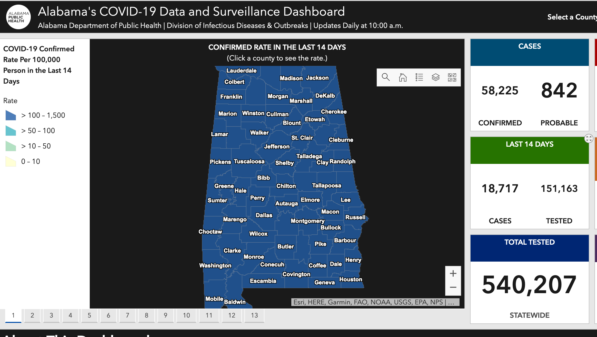
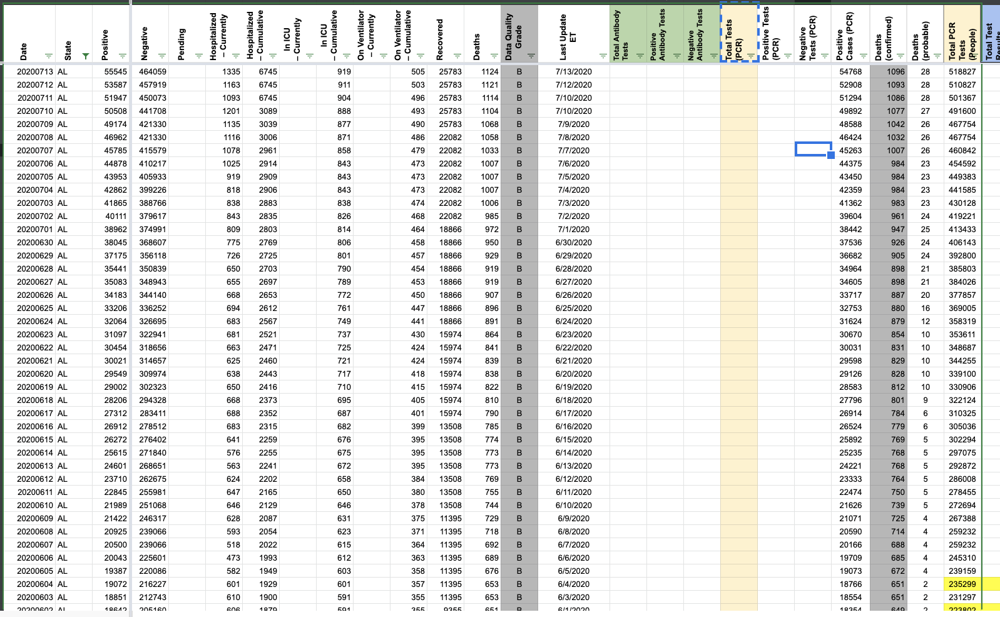
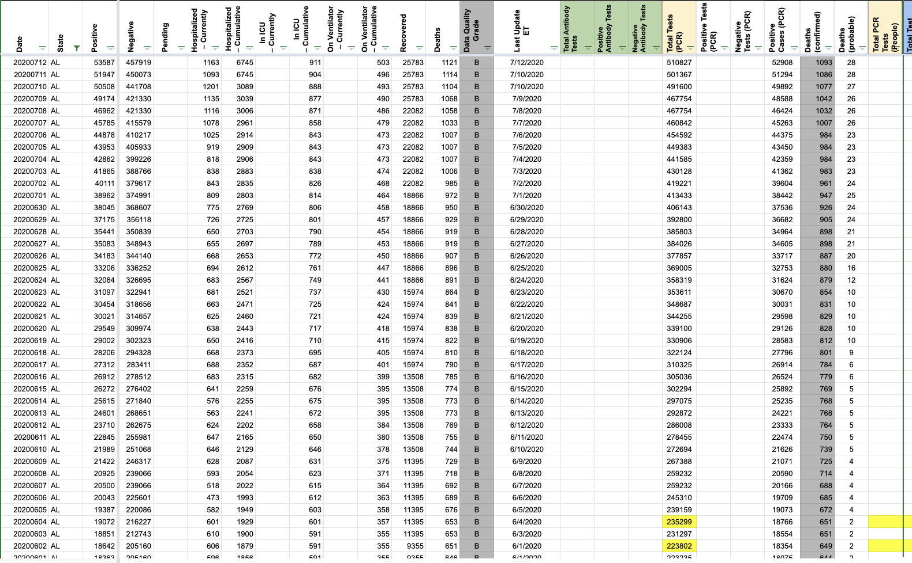

[AL] is reporting Specimens not Individuals
Issue number 636
amandafrench opened this issue on July 15, 2020 at 2:56 pm
State or US: [AL]
Describe the problem Per Outreach information, AL “Total Tested” is reporting in units of specimens not people. We have changed the capture field as of today (7/15) and need to backfill the series and put it into the correct column.
Related to #610
Link to data source 
Comments
brianskli commented on August 7, 2020 at 8:34 am
In States Daily, pre-7/15 test counts from Total PCR Tests (People) were copied over into Total Tests (PCR).
Before: 
After: 
This issue has been automatically marked as stale because it has not had recent activity. It will be closed if no further activity occurs. Thank you for your contributions!